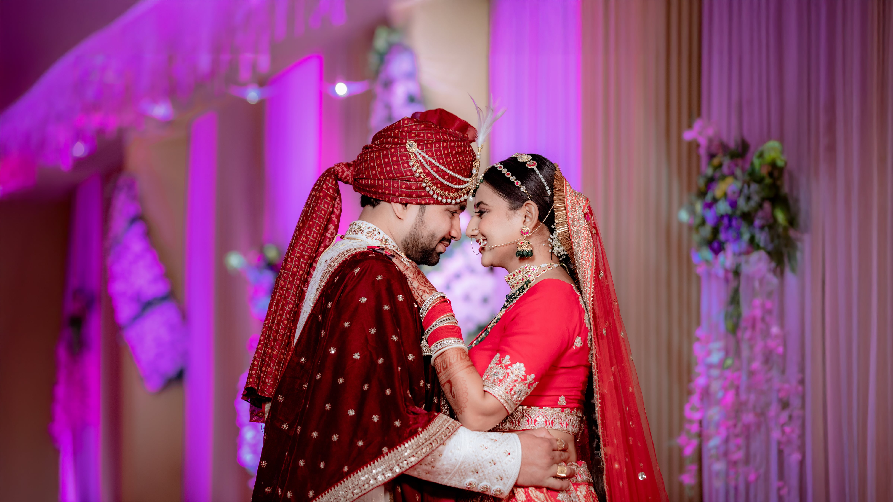
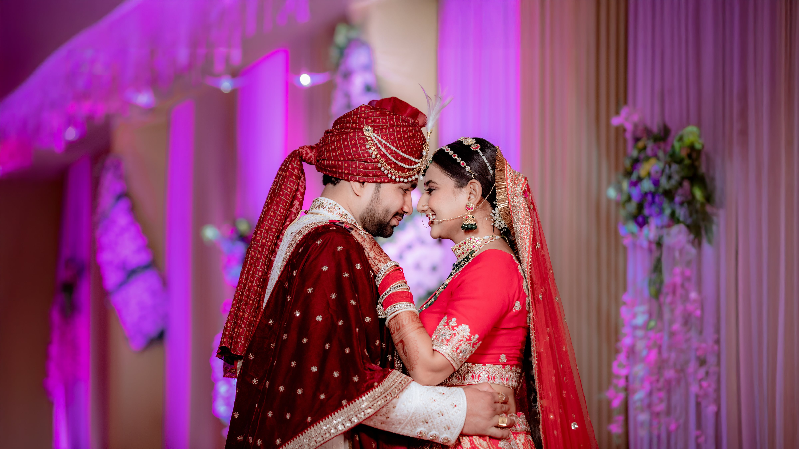

The Best Wedding Photographer in Kutch - Matrix Studio
Photography - The Art of Freezing the Moments in Camera
The art of capturing precious moments in the camera is known as Photography. Ranging from pinhole cameras to Digital Single Lens Reflex cameras, the art of Photography witnessed immense changes in recent years. Photography is not about capturing images, but it is about stealing memories and moments. Although there are many types of Photography, but the known one is wedding photography. Wedding photography is not just a mastership of photography, but it reckons the emotions, love, happiness, the rejoicing of the bride, groom along with their families. It always becomes a moment to cherish whenever the bride and groom look back at the captured memories. The capturing of one of the primus events of life is always an art of proficiency and must be done by the best in the business.
Types of Professional Photography in Jaipur
Although there are various types of Photography, but the major types
of photography that people quest for are:-
Child Photography
With the increase in the craze of photography, Child Photography in Kutch is the new variant of photography available in the market. Although it requires a lot of stamina, patience, and artistic skill, this new version of photography can be your favourite mode of photography. It's never easy to make the children pose as you want. Still, a good Child Photographer knows the perfect way to extract poses out of childish acts. Matrix Studio is the best Child Photography Studio in Jaipur that captures the Sweetness and Elvish of your Children in a click.Maternity Photography
One of the most precious moments in a women's life is pregnancy. Keeping a little one with you for nine months is always nerve-wracking and thrilling. But most importantly, it is the sense of attachment and love that women feel during the whole time span. Capturing these precious moments for a lifetime is always a dream of women. Thus, Maternity Photography in Kutch is not just a photoshoot, it is about reflecting two souls in one body. Seizing the mother's happiness with the fat belly that includes the soul, heart, and lifeline of the parents is always illustrious. Thus, one must opt for the best Maternity Photographer to hold on to your memories forever. Matrix Studio is the best Maternity Photoshoot Studio in Jaipur that can make your reel live forever.Pre-wedding Photography
A pre-wedding Photoshoot is the most acceptable way to reflect the love and bond between couples. It helps in depicting the bond and love between the upcoming Bride and groom. The love and care for each other are the perfect ingredients of an excellent Pre-wedding Photography in Kutch . Pre-wedding Photoshoot always excites the upcoming Bride and groom for their wedding day. So, it's always better to hire the best Pre-wedding Photographer for preserving your precious moments. Ending your search for the best Pre-wedding video shoot in Jaipur with Matrix Studio is always a good idea.Pre-wedding Videography
Very popular nowadays, Pre-wedding Videos are the best way to reflect your pre-wedding love and bond. It depicts the depth of your bonding and cares for each other. Pre-wedding videos always excite the upcoming Bride and groom for their wedding day. Love Story Videos, Romantic Song videos, Concepts Films, and Save the date video are the essential parts of the pre-wedding video Kutch . Matrix Studio is the best Pre-wedding video shoot in Jaipur.Wedding Photography
Wedding photography is not just a mastership of photography, but it reckons the emotions, love, happiness, and rejoicing of the bride, groom, and families. It always becomes a moment to cherish whenever the bride and groom look back at the captured memories. The capturing of one of the primus events of life is always an art of proficiency and must be done by the best in the business. Matrix Studio, as the Best Wedding Photographer in Jaipur, is the most preferred choice of all Jaipurites.
Matrix Studio - A team of Passionate Photographers
Matrix Studio is a Jaipur based Photography Studio rendering its services for decades. Matrix Studio with vast years of experience and uncountable wedding photoshoots is always an optimal choice for capturing your crucial moments. Matrix Studio with the team of best wedding photographers and videographers seizes the scenic moments that will surely forge you to fall in love again. Our Photography work is Bright, Bold, and Beautiful as we always try to maintain a strong bond with our clients. This helps in providing a mesmerizing Photographic experience for our clients as well as for us also. Our experienced team also travels between the city and destinations as per the photoshoot locations selected by our clients. We are experienced in destination shoots in the famous locations of Rajasthan as well as nearby areas too.Matrix Studio offers various services like Cinematography, Candid Photography , Wedding Photography , Pre-wedding Photoshoots , Portfolio Photoshoots , Maternity Photoshoot , Destination Photography , etc with par excellence.
Aim & Objectives of Matrix Studio
Matrix Studio was instituted with an aim to provide the clients with
spectacular images that depict the moments in such a way so that one
can relish the moments again by opening the images. From the inquiry
to the final delivery of the photos, our production team and
photographers co-ordinate to provide the excellence in photography
that skyrockets on the expectation of our clients. Apart from any
other Photography studio in Jaipur or wedding Photographers in
Jaipur, we bring our new ideas and artistic vision to the
photography business. This makes us stand apart from the bunch of
various Photographers in India.